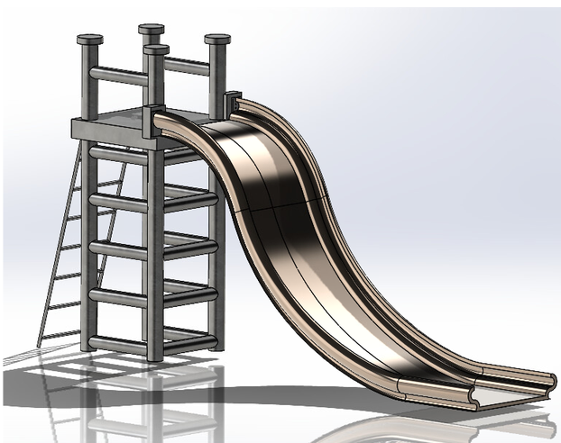
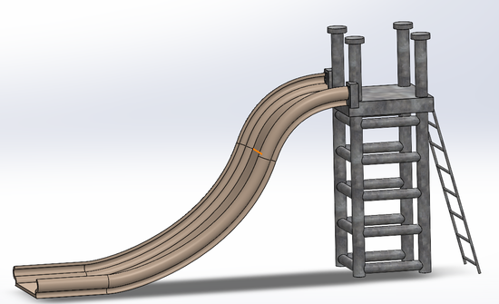
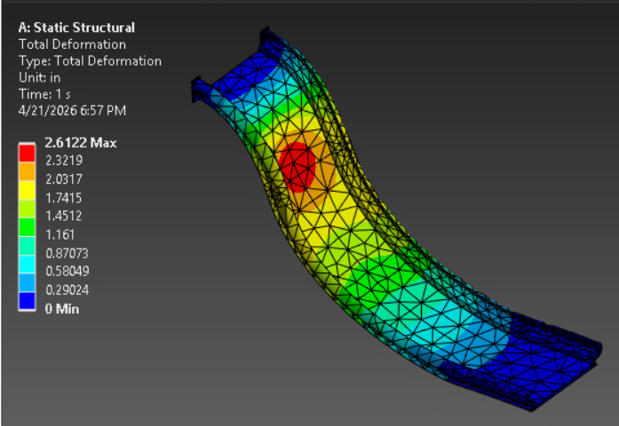
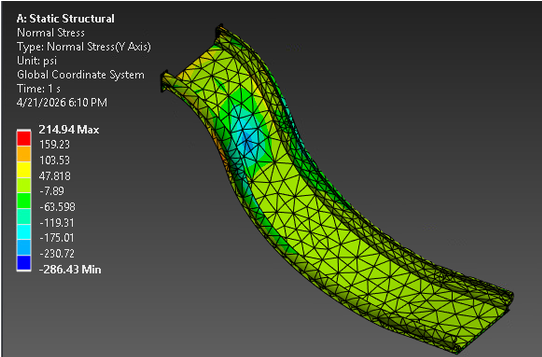
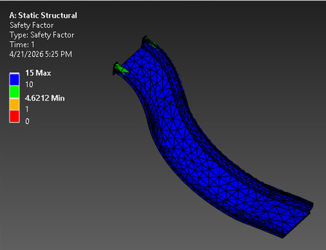
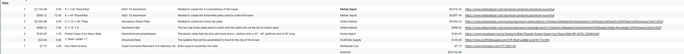

2026 · DESIGN · SIMULATION · FEA
Structural Design & FEA on Playground Equipment
Mechanical design and finite element analysis project investigating structural behavior and improving the design of playground equipment.

Overview
This project involved first designing a playground part which is supposed to hold more than 2 people. I chose to redesign a slide which was planned to be made using galvanized steel instead of plastic due to slide speed and also because of better durability and lifespan. After creating the initial design on SolidWorks, we were able to make a bill of materials to specify what exactly we would need to manufacture and build this in real life. We also analyzed our playground parts by hand and using ANSYS to get results like the bending stress, shear force, tensile stress, and factor of safeties. After analysizing our plaground parts, we then went back to add any additional changes if there were any issues and such.
Design
CAD modeling was used to develop and evaluate the geometry of the playground structure.

FEA Analysis
Finite element analysis was used to investigate stresses, deformation, and structural behavior under applied loading conditions.



Results
The analysis was used to evaluate the structural performance of the design and identify areas for potential improvement.
Bill of Materials
